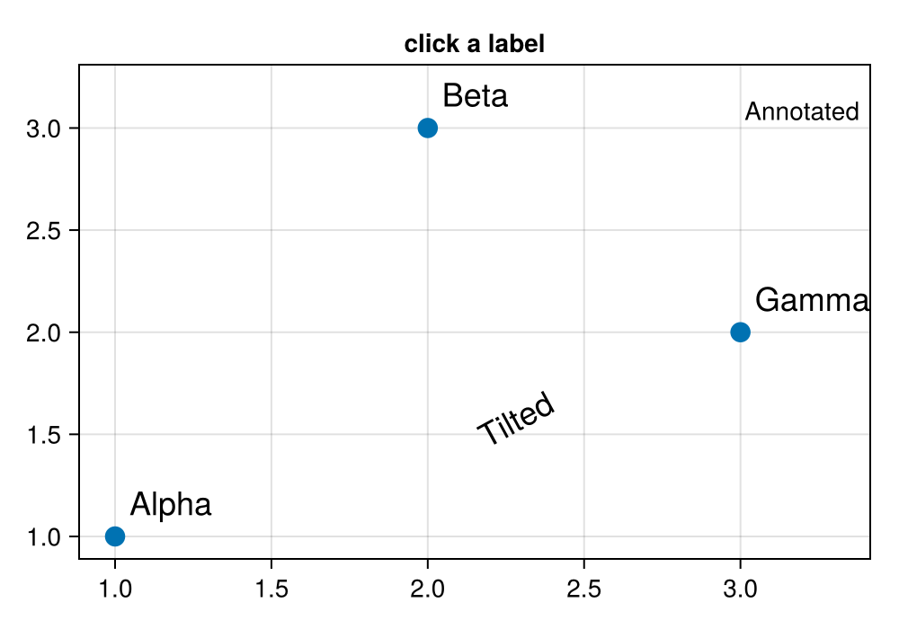

Text labels
masque(fig) turns data-space text! and annotation! into clickable boxes. The box comes from Makie's own string bounds. A rotated label is still one box, axis-aligned and a little loose. Click a label in a live notebook and the bond is an ElementEvent with text, index, x, and y.
The scatter on the same axes is also detected. A marker click has no text field. The readout guards on that.
Notebook as text
Click a label, including the tilted one and the annotation. The last cell quotes it.
Add text! and annotation! on the scatter you already have. masque makes the labels clickable.
begin
fig = Figure(size = (500, 350))
ax = Axis(fig[1, 1]; title = "click a label")
pts = [(1.0, 1.0), (2.0, 3.0), (3.0, 2.0)]
scatter!(ax, first.(pts), last.(pts); markersize = 16)
text!(
ax, first.(pts), last.(pts);
text = ["Alpha", "Beta", "Gamma"], offset = (8, 8), fontsize = 18,
)
text!(ax, [2.2], [1.4]; text = ["Tilted"], rotation = 0.5, fontsize = 18)
annotation!(ax, [3.3], [3.2]; text = ["Annotated"])
nothing
end@bind pick stores the click. A marker click is a different value from a label click.
@bind pick masque(fig)
This cell reads pick, so it re-runs on the click.
if pick === nothing
"click a label"
elseif hasproperty(pick, :text)
"\"$(pick.text)\""
else
"that was a marker — click a label"
endclick a labelVariations
offset and fontsize follow the label. annotation! is the same button as text!. A label in screen space, rather than data space, is not a hit target.